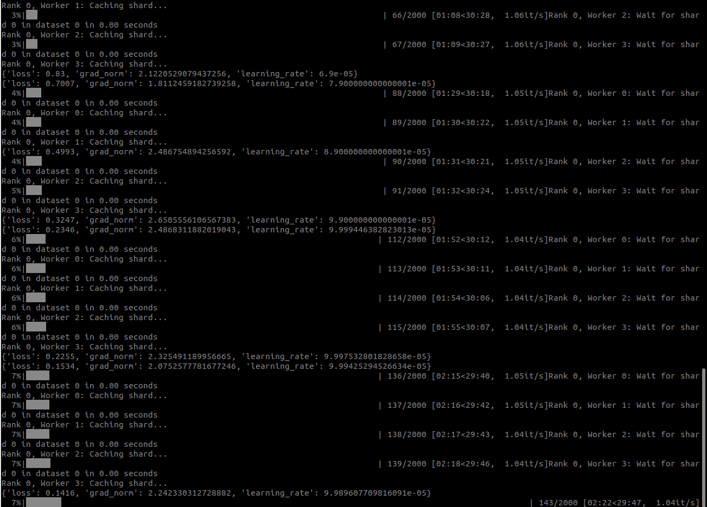

Training & Evaluation
End-to-end flow from collected datasets to a deployed autonomous policy: fine-tuning NVIDIA GR00T N1.7, evaluating in NVIDIA Isaac Lab, deploying to the Addverb Syncro5, and co-training.
Training Overview
Parquet + JPEG
50–200 episodes"] --> FT["GR00T N1.7
Fine-tuning
10,000 steps"] FT --> CK["Checkpoint"] CK --> SE["Sim Evaluation
Isaac Lab
≥30 rollouts"] CK --> RE["Real Evaluation
Syncro5 Arm
Policy Server"] RE -- "gap too large" --> CT["Co-Training
Mix sim + real"] CT --> FT SE -- "pass" --> RE classDef nvidia fill:#f0fae0,stroke:#76B900,color:#2a2a3a classDef addverb fill:#fce8e9,stroke:#E3000F,color:#2a2a3a classDef mixed fill:#f7f7fa,stroke:#d8d8e2,color:#2a2a3a class FT,CK,SE nvidia class RE addverb class DS,CT mixed
Prerequisites
| Requirement | Minimum | Recommended |
|---|---|---|
| GPU VRAM | 24 GB (RTX 4090) | 48 GB+ (A6000/H100) |
| Dataset size | 50 episodes | 100–200 episodes |
| GR00T base model | nvidia/GR00T-N1.7-3B |
|
| Framework | PyTorch 2.x + NVIDIA GR00T training toolkit | |
global-batch-size
or use gradient accumulation for smaller GPUs.
GR00T N1.7 Fine-Tuning NVIDIA GR00T
NVIDIA GR00T N1.7
A 3-billion parameter Vision-Language-Action (VLA) foundation model from NVIDIA. Accepts dual-camera RGB + language task description, outputs 16-step action trajectories. Fine-tuned on Addverb's teleoperation datasets in ~2 hours on a single A6000.
Once the dataset is properly collected, the next step is to fine-tune GR00T N1.7 on this dataset. After running the following command, the following output will be visible indicating training commenced successfully.
Training Command
uv run python \
gr00t/experiment/launch_finetune.py \
--base-model-path nvidia/GR00T-N1.7-3B \
--dataset-path /path/to/syncro5_dataset \
--embodiment-tag NEW_EMBODIMENT \
--modality-config-path /path/to/syncro5_config.py \
--max-steps 10000 \
--learning-rate 1e-4 \
--global-batch-size 32 \
--action-horizon 16 \
--output-dir /path/to/checkpoints
Key Hyperparameters
| Parameter | Default | Notes |
|---|---|---|
--max-steps |
10,000 | More steps for larger datasets; diminishing returns past 20k |
--learning-rate |
1e-4 | Standard for VLA fine-tuning |
--global-batch-size |
32 | Reduce to 16 or 8 for smaller GPUs |
--action-horizon |
16 | Future action steps predicted per inference |
--warmup-steps |
500 | Linear warmup for learning rate |
Dataset Format Requirements
The NVIDIA GR00T training script expects the exact directory structure produced by SimDataLogger:
dataset/
├── meta/
│ ├── info.json
│ ├── tasks.parquet
│ └── episodes/chunk-000/file-000.parquet
├── data/chunk-000/file-000.parquet
└── images/
├── observation.images.ego/episode_000/*.jpg
└── observation.images.external/episode_000/*.jpgmeta/info.json must contain correct total_episodes, total_frames,
camera names, and image shape. SimDataLogger.finalize() generates this automatically.
Sim Evaluation (Stage 3) Isaac Lab
Evaluate the trained policy in the same NVIDIA Isaac Lab environment used for data collection.
Setup
# Start the GR00T policy server
uv run python gr00t/eval/run_gr00t_server.py \
--model-path /path/to/checkpoint \
--embodiment-tag NEW_EMBODIMENT \
--action-horizon 16
# Run evaluation rollouts in Isaac Lab
python lerobot_eval \
--env Syncro5-Teleop-Cam-v0-Eval \
--num_rollouts 30 \
--max_steps 300Success Criteria
- Run at least 30 rollouts for statistical significance
- Target success rate: 50–70%
- If below 50%, collect more demonstrations or adjust hyperparameters
Real Evaluation (Stage 4) Addverb
Deploy the GR00T policy server to control the physical Addverb Syncro5 arm.
Deployment Flow
(NVIDIA inference)"] -->|"action"| RC["Robot Client
(ROS2 bridge)"] RC -->|"velocity cmd"| ARM["Syncro5 Arm"] ARM -->|"joint state"| RC CAM1["Wrist Camera"] -->|"RGB"| RC CAM2["Top Camera"] -->|"RGB"| RC RC -->|"observation"| PS classDef nvidia fill:#f0fae0,stroke:#76B900,color:#2a2a3a classDef addverb fill:#fce8e9,stroke:#E3000F,color:#2a2a3a class PS nvidia class RC,ARM,CAM1,CAM2 addverb
# Terminal 1: Start NVIDIA GR00T policy server
uv run python gr00t/eval/run_gr00t_server.py \
--model-path /path/to/checkpoint \
--embodiment-tag NEW_EMBODIMENT
# Terminal 2: Start Addverb robot client
python keyboard_teleop_robot.py --autonomousTips for Real Evaluation
- Ensure camera positions on the real Syncro5 match the Isaac Sim configuration
- Verify joint calibration — small offsets cause large behavior differences
- Start with slow velocities and increase gradually
- Keep a hand on the e-stop during initial runs
Co-Training (Stage 5)
If the sim-to-real gap is too large, co-training mixes a small number of real demonstrations with the NVIDIA Isaac Sim dataset.
Strategy 2: Co-Training With Real Data
Co-training addresses the sim-to-real gap by combining abundant simulation data with exact real-world demonstrations. Because the **same logger** is used for both hardware and simulation pipelines, the datasets share an identical Parquet + JPEG schema, allowing for seamless concatenation.
| Data Source | Quantity | Reality Match | Role |
|---|---|---|---|
| Simulation | Abundant (70–100+ episodes) | Approximate | Broad task coverage & augmentation |
| Real teleop | Limited (5–20 episodes) | Exact | Reality grounding & gap closure |
Co-Training Command
uv run python \
gr00t/experiment/launch_finetune.py \
--base-model-path nvidia/GR00T-N1.7-3B \
--dataset-path /path/to/combined_dataset \
--embodiment-tag NEW_EMBODIMENT \
--modality-config-path /path/to/syncro5_config.py \
--max-steps 10000 \
--learning-rate 5e-5 \
--global-batch-size 32Joint Conventions
| Index | Joint | Type | Unit |
|---|---|---|---|
| 0 | joint1 (base rotation) | Revolute | radians |
| 1 | joint2 (shoulder) | Revolute | radians |
| 2 | joint3 (elbow) | Revolute | radians |
| 3 | joint4 (wrist pitch) | Revolute | radians |
| 4 | joint5 (wrist roll) | Revolute | radians |
| 5 | joint6 (flange) | Revolute | radians |
| 6 | gripper (finger_joint) | Revolute | radians |
Indices 7–8 are zero-padded for base_obs_dim / base_act_dim compatibility with the
NVIDIA GR00T training format.